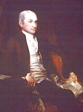

by
Stefan Bielinski
Revolutionary leader, statesman, and jurist John Jay lived in a rented residence on State Street while serving as Governor of New York State from 1795 to 1801. He also provided interesting commentary when he was in Albany on public business during the War for Independance.
John Jay was born in New York in 1745. He died in at his home in Westchester County in 1829. In 1774, he married Sara Van Brugh Livingston - daughter of the Albany-born governor of New Jersey and a descendant of Albany founder Robert Livingston. The marriage produced seven children. His daughter, Maria, married Goldsbrow Banyar, Jr. and remained in Albany long after her parents had left. He was the brother of one-time Albany minister's wife Eva Jay Munro and mentor of her son, Peter Jay Munro.
Not knowing if the legislature would remain in Albany , he first rented two rooms while his family remained in New York. But, soon, he acquired and resided at 60 State Street in a home formerly belonging to James Caldwell. In 1800, the census revealed that his household consisted eight family members and five slaves.
The Slave Manumission Act of 1799 was passed during his term of office. Although a slaveholder himself, John Jay had been a leading figure of the anti-slavery movement in New York State.
Jay rarely (if ever) came to Albany before being elected governor. In 1801, he retired to a family farm in Bedford, Westchester County. Perhaps, he never returned to the "State Capital" - dying in Westchester in May 1829.
notes
 Sources: The life of John Jay has not been assigned a CAP biography
number. This profile focusing on Jay's life in Albany is derived chiefly
from community-based resources. The Jay
Papers project at Columbia University provides a convenient focal
point. See also, John Jay: The Making of a Revolutionary - Unpublished
Papers, 1745-1780, edited by Richard B. Morris (New York, 1975).
Sources: The life of John Jay has not been assigned a CAP biography
number. This profile focusing on Jay's life in Albany is derived chiefly
from community-based resources. The Jay
Papers project at Columbia University provides a convenient focal
point. See also, John Jay: The Making of a Revolutionary - Unpublished
Papers, 1745-1780, edited by Richard B. Morris (New York, 1975).
Portrait: by Gilbert Stuart (1755-1828) and John Trumbull (1756-1843)
Oil on canvas, begun in 1784; completed by 1818; National Portrait Gallery, Smithsonian Institution.
first posted: 8/10/02; last updated 11/13/10